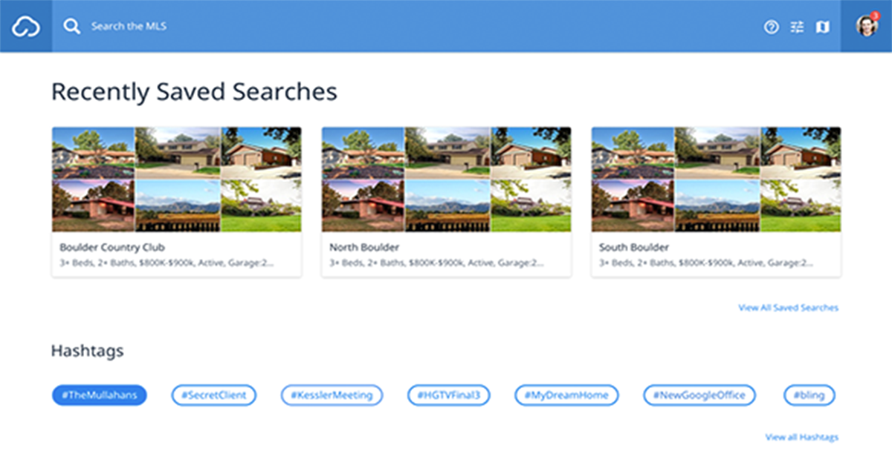

My development toolset.
Ruby on Rails
Since building my first Rails application back in 2007 I have loved the beauty and simplicity of the Ruby language. One of my favorite features of Rails has to be size of its community thats builds gems and contributes to the Rails codebase itself. There seems to be a entire vibe that surrounds open source.
React, Redux, ES6, NPM and Node
Before Node.js even came around I was building full web applications in pure JS. I love the patterns and practices of React, but I don't mind going outside of its boundries when needed. I also really enjoy working with architectures centered around asynchronous JSON and small data end points.
Postgres and Mongo
PostgreSQL is a powerful, open source object-relational database system and Mongo is a NoSQL document store, containing many different key-value pairs, or even nested documents. Two drastically different approaches to deal with data, each with pros and cons.
HTML and CSS
Structural and stylistic scripting tools, each having powerful features for everything from canvas (drawing) to animations. Huge gains can be achieved through moving page elements, such as animations, from JavaScript to creative CSS enhancements.
I am a highly motivated web application developer/designer with 9+ years of GUI experience, and have 8+ years working with Ruby on Rails. I also have extensive experience working with JavaScript.
History
-
2011 - 2016: W+R Studios
Over the span of several years I assisted in maintaining and launching 4 SAAS/Rails projects within a small, agile team for the real estate industry. Most recently creating a custom front-end framework to consume a Rails JSON API.
2001 - 2007: Foldera
Co-founded a software company that was aimed to improve project management and collaboration. My role was Lead Designer/Usability Engineer.
"Derek Rush was the first developer hired by W+R Studios. From the beginning Derek
has shown great vision with our flagship product and contributed to many favorable
enhancements. Derek has also been instrumental contributing to the development
of two additional products with key innovations that separates us from the
competition. Derek is a strong collaborator with fellow teammates and has
mentored new developers along the way. If you are considering adding to your team
Derek is a proven asset every successful company should have." ~ Gary McDaniel - Director of Member Services, W+R Studios
Recent Projects
CloudMLX
Built a front-end framework, to search MLS's through a natural language search feature. Using complex REGEX patterns we use autocomplete to match records and display results as the user enters search criteria. We achieve this by leveraging the performance of JS's non-blocking asynchronous nature for performance which is able to query multiple data sources at once. Our very small team beat massive companies to win...
CloudCMA

My first project at W+R, this is a online comparative market analysis (CMA) generator for real estate agents. I was able to add many features over time, such as the "Whats your home worth?" lead capturer, and the iPad version of cloudCMA.
Nudge

Nudge was a very simple email alert system to notify clients about changes in the real estate market, tease upcoming listings and send general digital promotional flyers. I worked on all aspects of this project including building all widget animations in javacript.